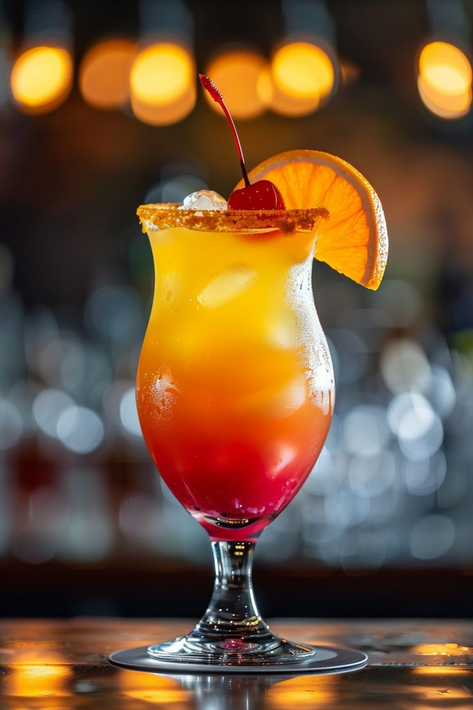
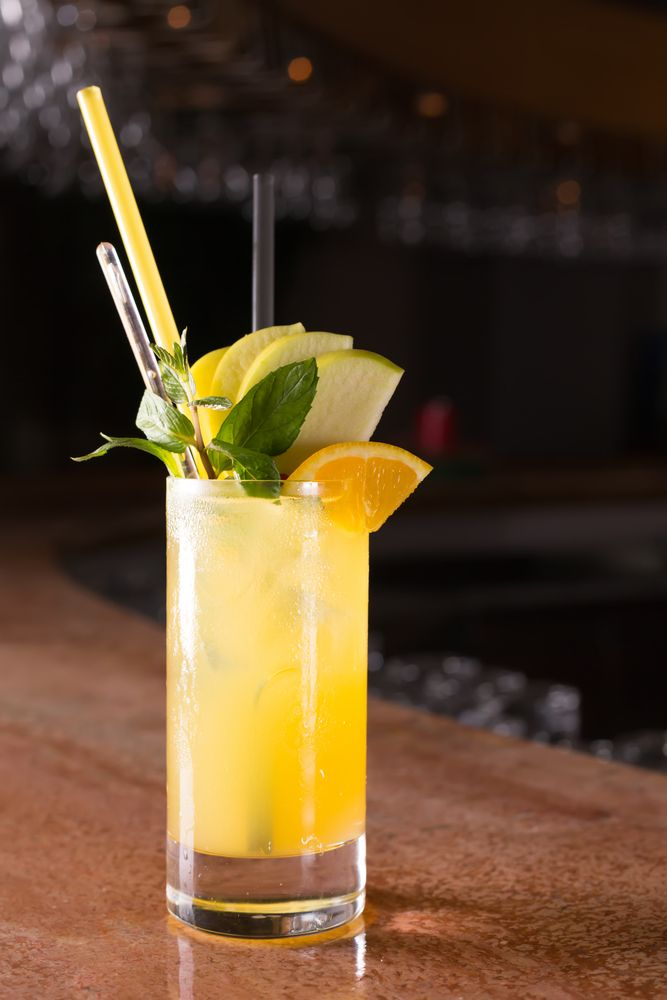
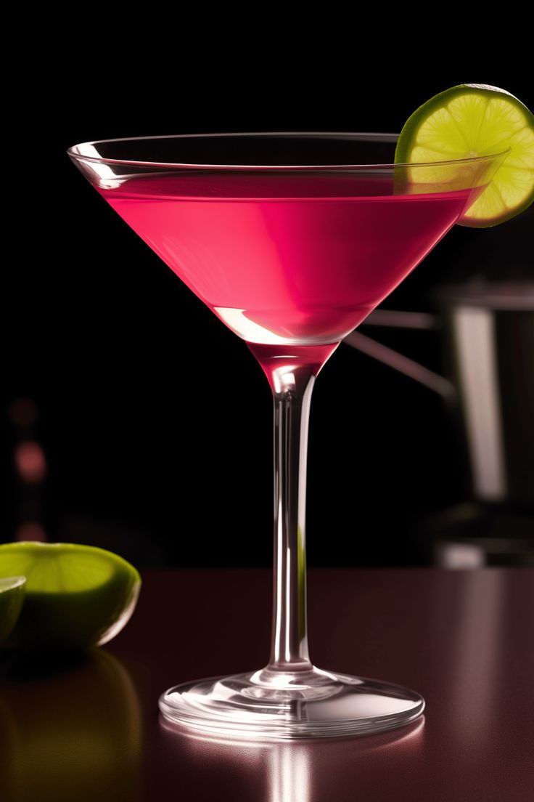

É a versão da tradicional caipirinha, mas feita com vodka. Simples, versátil e perfeita para dias quentes.
Tempo de preparo: 3 minutos

Drink tropical, doce e frutado, muito popular em bares e festas.
Tempo de preparo: 3 minutos

Um dos drinks mais populares do mundo, o Moscow Mule é extremamente refrescante e combina vodka, suco de limão e ginger beer.
Tempo de preparo: 3 minutos

Um drink clássico, conhecido por ser quase uma refeição líquida.
Tempo de preparo: 5 minutos

Extremamente simples e prático, o Screwdriver consiste basicamente em vodka e suco de laranja.
Tempo de preparo: 2 minutos

Ícone da coquetelaria moderna, ficou famoso em filmes e séries como Sex and the City.
Tempo de preparo: 3 minutos

Um drink clássico, encorpado e cremoso, que combina vodka, licor de café e creme de leite (ou leite).
Tempo de preparo: 3 minutos

Uma versão mais simples e intensa do White Russian. Feito apenas de vodka e licor de café, é um drink forte.
Tempo de preparo: 2 minutos

Uma opção leve, refrescante e fácil de preparar. Combina vodka com água tônica e geralmente leva uma rodela de limão.
Tempo de preparo: 2 minutos

Drink leve, aromático e equilibrado. Mistura vodka, suco de cranberry e suco de grapefruit (toranja).
Tempo de preparo: 3 minutos

Chamativo pela cor azul vibrante, é um drink tropical que mistura vodka, curaçau blue e limonada ou refrigerante cítrico.
Tempo de preparo: 2 minutos

Um drink que combina café e coquetelaria de forma sofisticada.
Tempo de preparo: 2 minutos